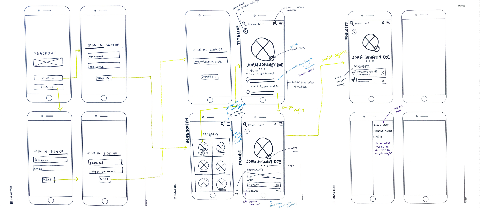
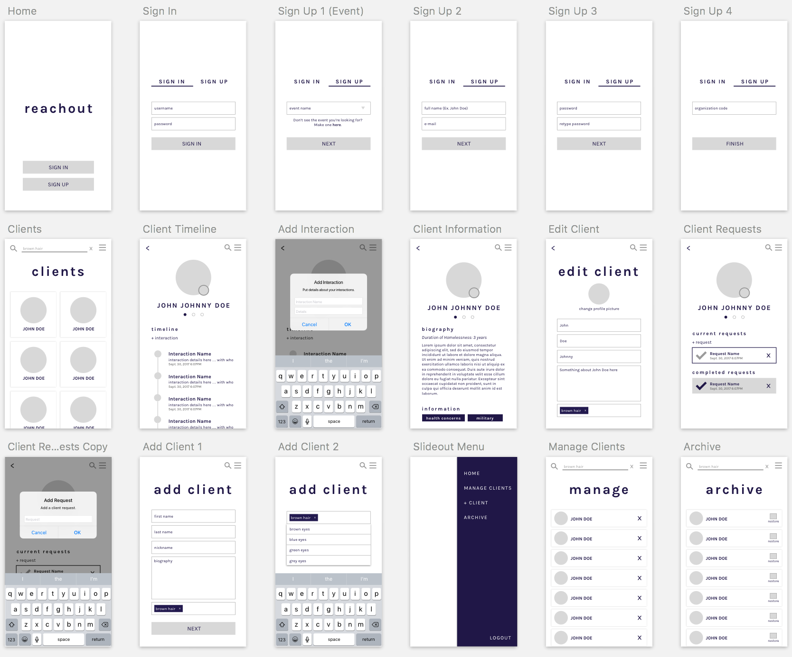

REACHOUT
sept–present (THIS PROJECT IS STILL IN PROGRESS.)
overview—
mobile, web application, ui/ux
problem space—
Reachout is a mobile-first web application designed for homeless outreach. Within a city or a given area, each homeless shelter has its own way to keeping track of the people the staff meet. However, because there is no centralized system, homeless coordination between organizations is often inefficient. Reachout is an aggregated database designed to help shelters coordinate resources and better help the homeless community.
original designs—
I joined this project in the middle of its development process. In our initial team meetings, everyone in the group felt that the application needed a redesign. The designs were not intuitive and were very difficult to use. For example, styles were not consistent in some places, and the information hierarchy was not clear in indicating what was important.

stakeholders—
- Homeless population: The people who are being reached out to.
- Shelter Workers: They are the ones who are actively using the system to reachout to people.
paper prototypes—
To begin the redesign, everyone on the team gathered to discuss the things that we liked and disliked about the current design. We had a few discussions about the designs and also discussed the redesign from a technical standpoint in terms of how the new design would be added to the code.

Changes Made
- Re-organization of home page: A user is now able to gather more information more quickly, rather than scrolling through pages of text
- Adding profile images: If a participant is willing, they can allow shelter workers take a picture of them. This will simplify and speed up the search process.
- Re-organization of profiles: The placement of content and buttons was not user friendly.
- Slideout menu: This was done to reduce clutter on the page.
After I finished sketching out my ideas, we gathered again to discuss the changes that I had made. We talked about generalizing the application because we thought that the concept of the application could be generalized for other scenarios (disaster rescue) and other cities across the country. We also discussed how we could reorganize the tags such that we could get more out of them. The team leads also took these designs to the homeless organizations we are partnered with for more feedback.
mid-fidelity prototypes—
Using the feedback from our discussions, I moved on the mid-fidelity prototypes and made some changes, fleshing out our ideas even more.

next steps—
We hope to take these designs to the different homeless organizations we are partnered with and have them give us more feedback with the more fleshed out designs. These user testing sessions would provide valuable insight about the needs of the staff. In addition, I will be working on fleshing out the prototypes more and adding branding.